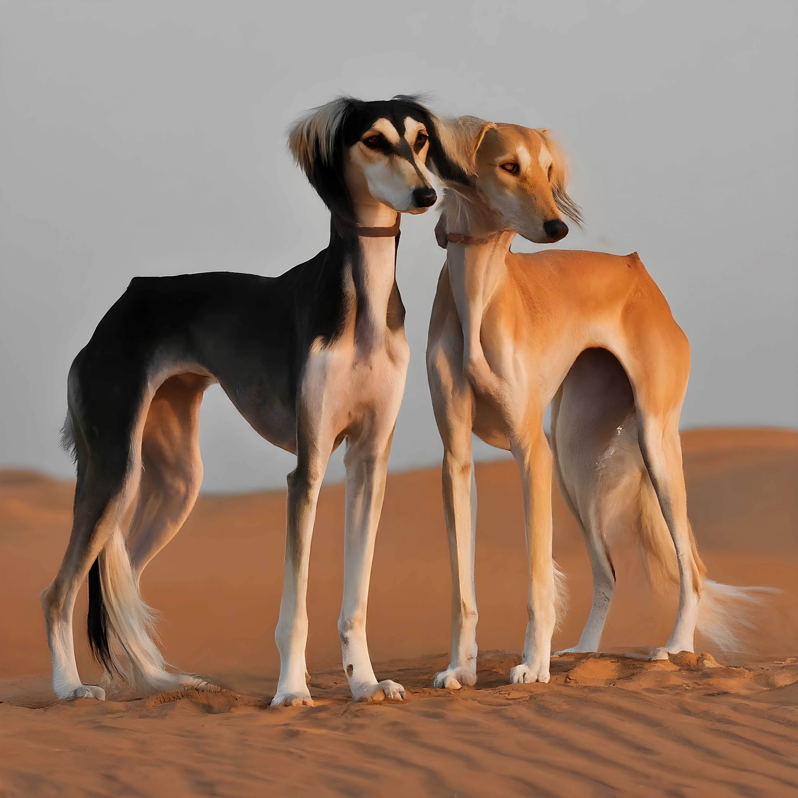

Aginu Coin Mission: Saving the Saluki Dog
Dogs have been loyal companions for millennia, used for hunting, guarding, and simply being adorable pets. Aginu Coin aims to use the power of cryptocurrency to raise awareness about different dog breeds, especially the endangered Saluki.

We believe all dogs deserve a good life, and breeds like the Saluki shouldn't face extinction. By joining us, you can help ensure these ancient companions grace our lives for generations to come. Share Aginu Coin with your friends to spread awareness about the Saluki!
The Plight of the Saluki
Several factors threaten the Saluki population:
- Limited Gene Pool: Due to their historical role with nomadic tribes, Salukis have a small gene pool, making them more susceptible to diseases and less adaptable.
- Habitat Loss: Urbanization and agriculture have significantly impacted the Saluki's native habitat, shrinking their territory.
- Shifting Preferences: Modern hunting practices favor breeds specifically for firearms, diminishing the role of traditional sighthounds like the Saluki.
Our Vision: A Secure Future for Salukis
Saluki Conservation Efforts
By raising awareness, Aginu Coin directly supports Saluki conservation efforts like:
- Habitat preservation programs
- Fostering programs to connect Salukis with loving homes
- Public education about the importance of the Saluki breed
Road Map: Future Outlook
Roadmap Phases for the Project
Aginu Coin will have to build and achieve several milestones to achieve its goals and be sustainable.
- In the first phase (1-3 months), we'll launch their website and social media presence to raise awareness. We will also list their coin on exchanges.
- In the next (3-6 months), we will focus on building a community and fundraising through social media campaigns, events, and partnerships with rescue organizations.
- In the third Phase (6-24 months) will solidify their project by implementing transparent funding allocation and community governance by launching a DAO and voting system to govern the token.
- Finally, the long-term plan (25 months and beyond) involves educational programs for children and funding genetic research with benefits beyond Salukis and human beings.
Join the Conservation!
Everyone can contribute to a healthier planet like Elon Musk does. By supporting Aginu Coin, you become an active member of the Saluki Conservation Squad, a global movement dedicated to saving this ancient breed.

Here's how you can help:
- Buy Aginu Coins: This directly supports the cause.
- Spread Awareness: Talk to friends and family about Saluki Coin and the plight of the Saluki breed. Share informative content on social media.
- Join the Online Community: Connect with us on social media for updates and discussions.
Buy Aginu Coin at Uniswap or Quickswap to join the fight!